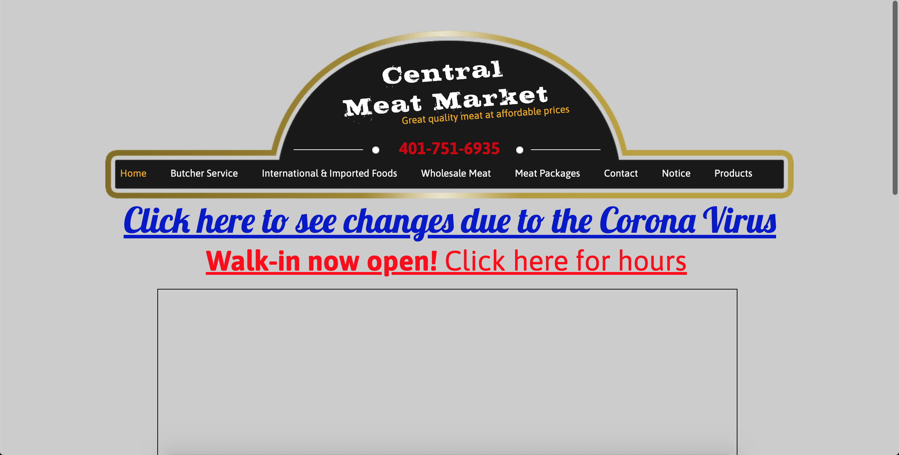
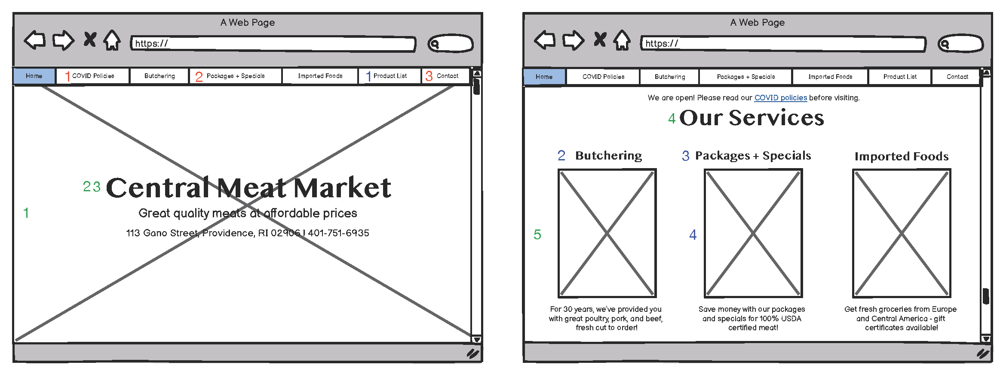
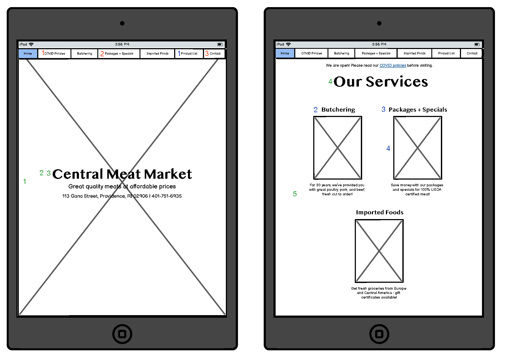
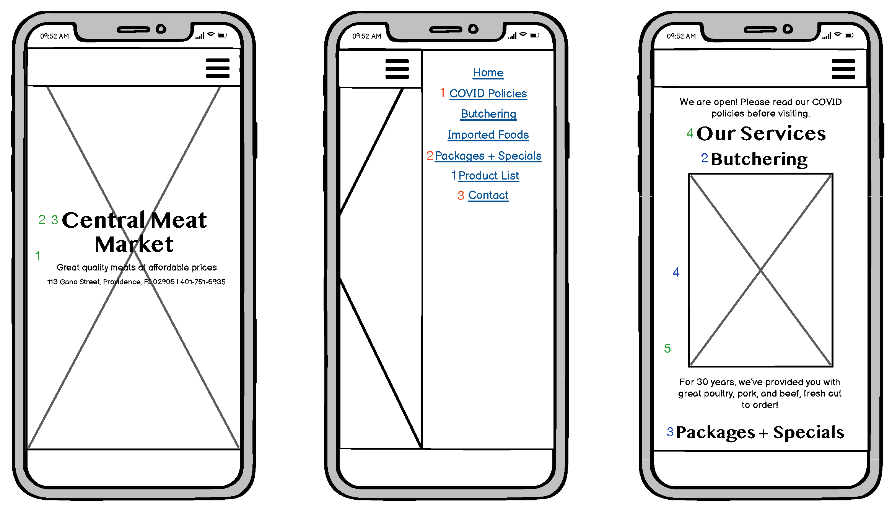
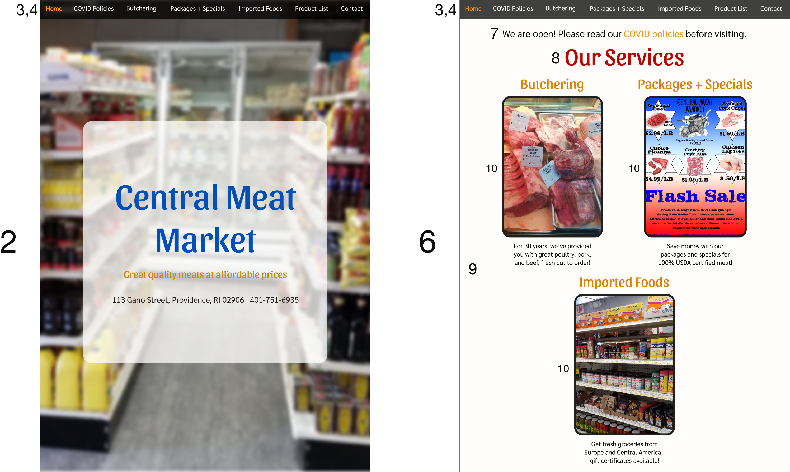
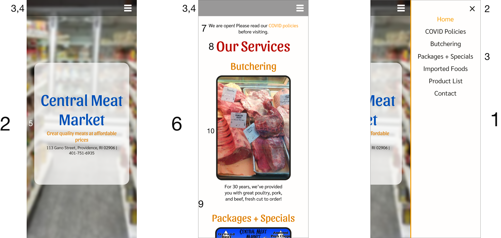
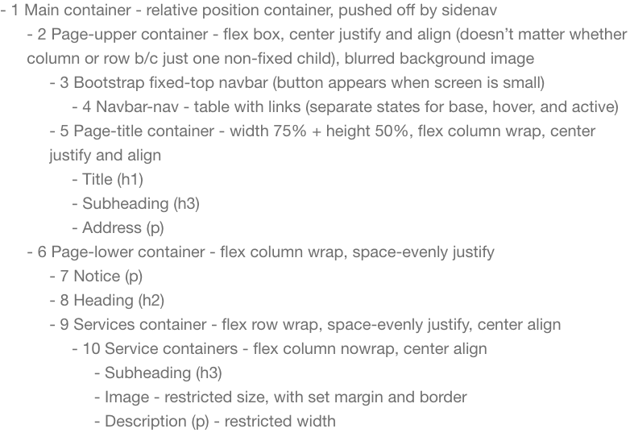
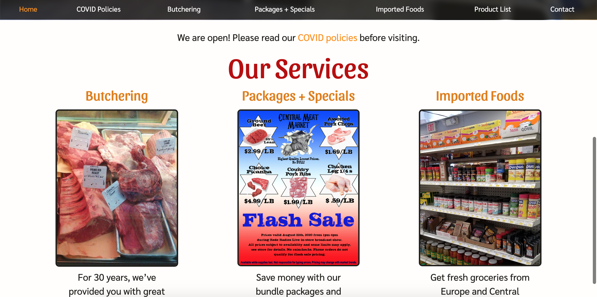

Part 1: Identifying Usability Problems

I immediately noticed a number of usability problems. I also used WebAIM WAVE
and a screen reader to test for accessibility issues.
| Efficiency |
Learnability |
Memorability |
Accessibility |
| 1. Broken image links |
1. Vague navbar titles - Butcher service vs. wholesale meat vs. products all are too similar |
1. Navbar is not organized in any obvious way. |
1. Low contrast between text and background colors. |
| 2. Shifting colors and fonts create false hierarchies |
2. Unclear matchup between navbar and body (e.g., different ordering) |
2. Lack of specials tab makes it hard to locate in the future. |
2. Images had random names and no alternative text, which was bad for the screen reader. |
| 3. General clutter |
3. Weekly specials and packages are in one subheading but link to separate pages. |
3. Navbar breaks some conventions (e.g., contact is not placed first or last). |
3. Empty headings and links |
| 4. Repetitive links (two links leading to the same COVID notice right next to each other in different colors) |
4. Only some images link. |
|
4. No page regions |
| 5. Not responsive (text does not wrap when resizing desktop screen, always three column layout) |
|
|
|
Part 2: Visual Redesign
I then created lo-fi prototypes. They are annotated with how they address the
usability issues above.



I've included annotations for how certain elements help fix the usability problems.
| Efficiency |
Learnability |
Memorability |
| 1. All images work |
1. Changes to clearer navbar titles |
1. More organized navbar (COVID notice first) |
| 2. Consistent color scheme and font sizes |
2. More consistency between navbar and main parts of the body (e.g., subheading names) |
2. Specials placed in navbar |
| 3. Less clutter (title moved away from navbar) |
3. Packages + Specials as one page clarifies heading |
3. Better adherence to conventions (contact last). |
| 4. Single link to COVID policies (no repeat links) |
4. Images consistently don't link. |
|
| 5. Responsive design (flexbox, font size management) |
|
|
Then, I created hi-fi prototypes in Figma.


I've annotated the key design elements. Note that the main container is not marked, as it contains the upper and lower frames of each prototype.

When screens are small, there is also the sidenav (shown in the final phone prototype).
I then created a visual design style guide.
Part 3: Responsive Redesign
This is my final website.

I tested it for responsiveness in multiple ways. The website handles window resizing very well,
since the font size changes according to multiple media queries. It was a little less
responsive with font resizing, mostly because of the main page-title-container; I wasn't able
to find a way to media query against font size settings. WebAIM WAVE only detected contrast errors
in the website. I worked hard to prevent contrast errors, so it was interesting that it still picked
up on them. This exemplifies the value of such resources.
Final Reflections
The most valuable part of this project was learning how to transfer designs from lo-fi prototypes
to hi-fi ones to websites. I learned that making good decisions early makes the rest of the process
much easier, and keeping a neat workflow is key to efficiency.